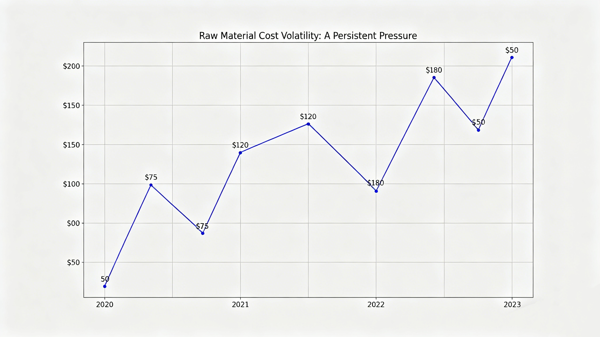
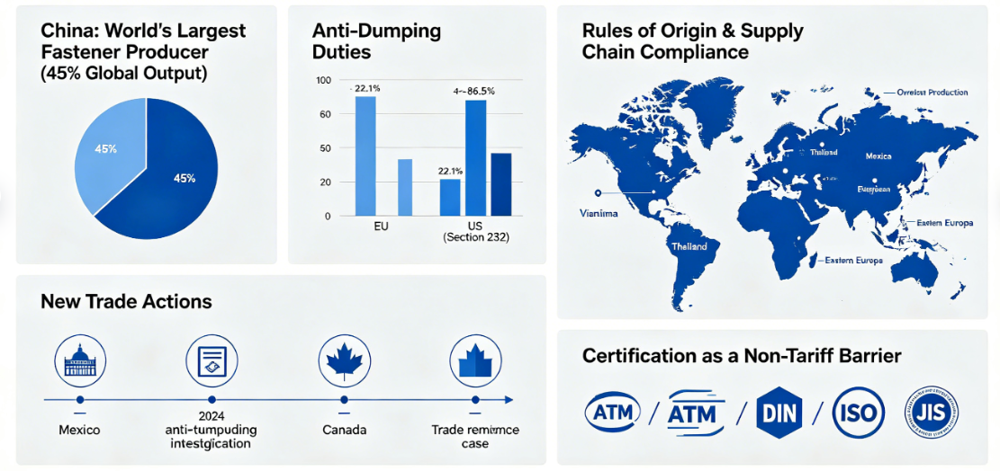
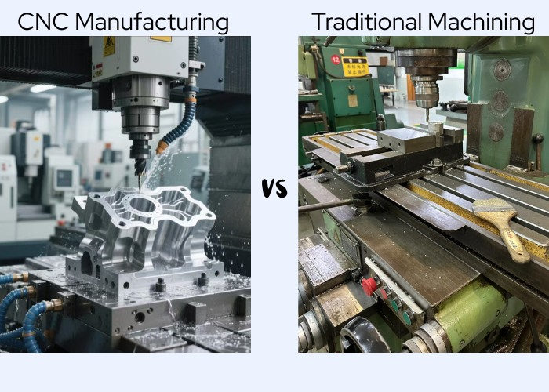

全球紧固件行业正处于一个关键的十字路口。尽管新能源汽车和航空航天等领域的需求持续增长，制造商们却面临着前所未有的阻力。三大主要力量——飙升的材料成本、加剧的贸易争端以及迫切的业务转型需求——正在重塑竞争格局。然而，对于那些能够驾驭这些挑战的企业而言，重大的机遇正在等待。

1. 原材料成本波动：持续的压力
原材料占紧固件总生产成本的50%至70%。自2023年以来，关键材料价格经历了剧烈波动，挤压了整个行业的利润空间。
- 钢材价格飙升 用于螺栓的高强度合金钢价格涨幅高达23%，直接影响生产成本。
- 铜和铝的波动 广泛用于电气连接器和轻量化紧固件的铜和铝，由于能源市场波动和供应链中断，价格一直高度不稳定。
- 涂层和表面处理成本 锌、镍和特种化学品价格上涨，进一步增加了耐腐蚀紧固件的成本。
- 能源驱动的通胀 欧洲和亚洲的高能源价格使热处理和锻造工艺的成本估计增加了15–20%。
与拥有强大议价能力的大型原始设备制造商不同，许多中小型紧固件制造商缺乏消化这些成本上涨的规模。在竞争激烈的市场中，将成本转嫁给客户往往很困难，导致利润空间被压缩，在某些情况下甚至出现运营亏损。
2. 国际贸易壁垒：在碎片化的世界中航行
作为全球最大的紧固件生产国（约占全球产量的45%），中国面临着日益增多的贸易限制，这使出口战略复杂化，并迫使供应链重组。
反倾销税仍是主要障碍 欧盟对中国碳钢紧固件维持反倾销税已超过十年，最近的复审将关税维持在22.1%至86.5%之间。美国同样根据232条款和反倾销令执行惩罚性关税。
新的贸易行动出现 除了传统市场，墨西哥于2024年对中国螺纹紧固件发起了反倾销调查，加拿大也启动了自身的贸易救济案件。这些行动标志着全球保护主义趋势，紧固件出口商无法忽视。
原产地规则与供应链合规 像USMCA这样的贸易协定要求更高的区域价值含量，推动中国紧固件公司在越南、泰国、墨西哥或东欧建立海外生产基地。
认证作为非关税壁垒 即使没有关税，获得市场准入也需要符合地区标准（北美的ASTM、欧洲的DIN/ISO、日本的JIS）。认证成本和时间表为较小的出口商创造了额外的障碍。

3. 转型势在必行：从低端到高价值制造
或许最重大的挑战——也是机遇——在于根本性的业务转型需求。仅凭价格竞争的时代已经结束。
- 低端市场侵蚀 越南、印度和土耳其现在提供成本更低的标件，夺取了原先由中国大规模生产商占据的市场份额。
- 高端领域的技术差距 航空航天、医疗和高性能汽车紧固件仍由欧洲、日本和美国供应商主导。国内企业缺乏先进的冷镦、热处理和表面精加工能力。
- 数字化转型滞后 尽管大型制造商投资于自动化和MES系统，但超过70%的小型紧固件车间仍依赖人工流程，限制了质量一致性和可追溯性。
- 可持续性压力增加 欧盟的碳边境调节机制和企业ESG要求，需要透明的排放数据和绿色制造工艺——这是许多紧固件生产商尚未准备好的领域。

4. 战略机遇：将挑战转化为优势
纵向整合与原材料对冲 领先的公司正在与钢厂签订长期合同，投资线材拉拔设施，并使用金融工具对冲价格波动风险。
近岸外包与全球布局多元化 前瞻性的制造商不再仅仅依赖从中国出口，而是在墨西哥、东南亚和东欧建立组装或精加工业务，以规避关税并满足本地含量规则。
攀登技术阶梯 投资伺服驱动冷镦机、在线热处理和自动光学检测系统，能够生产利润更高、面临较少价格竞争的精密紧固件。
认证作为竞争护城河 获得航空航天（AS9100）、汽车（IATF 16949）或医疗（ISO 13485）认证，创造了差异化并为竞争对手设置了进入壁垒。
数字可追溯性与智能制造 实施工业物联网（IIoT）解决方案，用于实时过程监控、预测性维护和“一物一码”可追溯性，建立客户信任并支持溢价定价。
可持续紧固件作为增长品类 开发环保涂层、回收材料含量和碳足迹声明，使制造商能够赢得具有环保意识的原始设备制造商的业务，并符合新兴法规。
📌 战略转型路线图
原材料与能源
墨西哥 / 越南 / 欧盟
智能工厂
AS9100 / IATF 16949
ESG合规
→ 从成本驱动到价值驱动 ←
5. 展望未来：谁将蓬勃发展？
- 将成本波动视为风险管理机遇而非威胁的紧固件公司。
- 主动建立海外生产能力，而非等待贸易壁垒迫使行动的出口商。
- 投资于自动化、数字化和先进工艺以摆脱低价陷阱的制造商。
- 认识到转型并非可选，而是实现可持续增长唯一途径的领导者。
未来五年将区分幸存者与繁荣者。那些拥抱变革、提升能力并建立有韧性、全球分布式运营的企业将变得更强大。那些固守旧模式的企业将被淘汰。
有关产品详情或技术支持，请访问我们的产品页面或联系我们的团队。
联系信息
WhatsApp: +8613303007759
邮箱: Lucky@wtbolts.com
网站: wtscrews.com
品牌: WT Fasteners